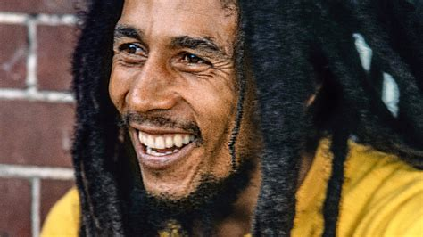
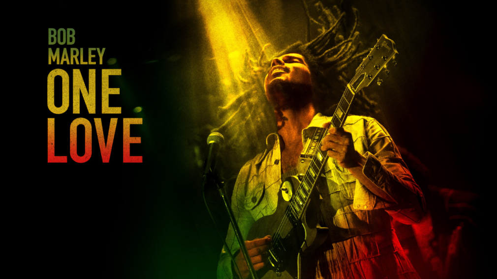
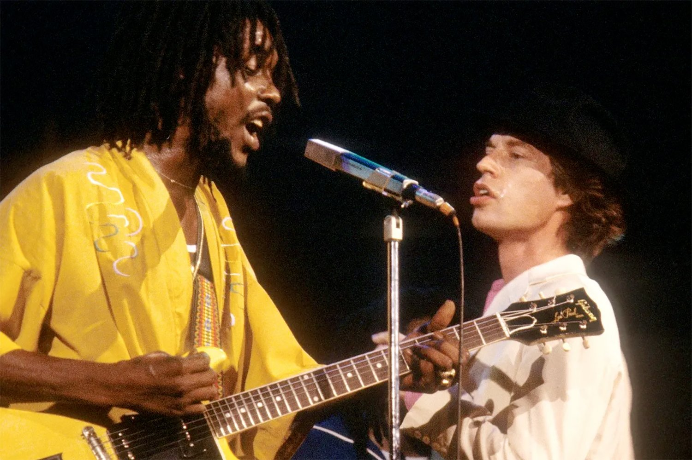
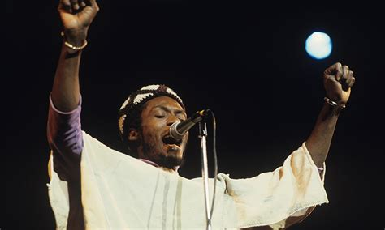
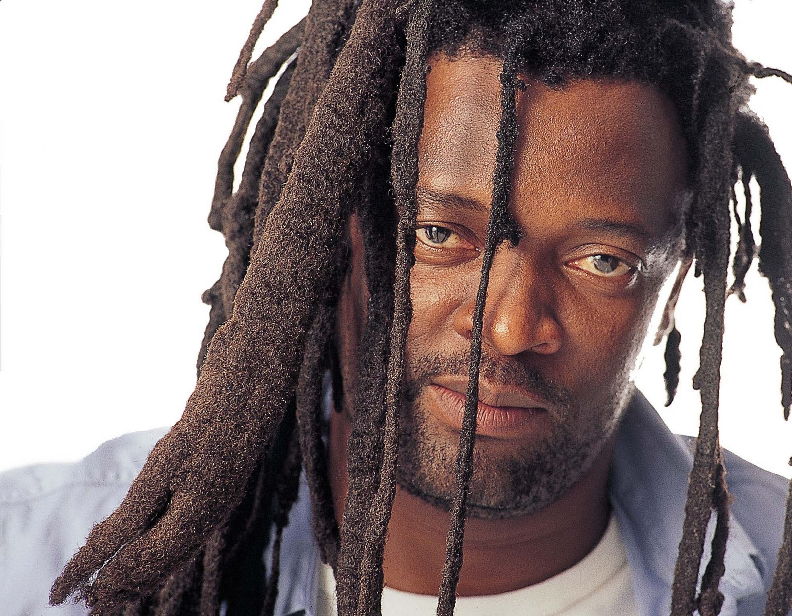
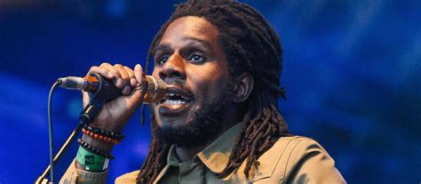
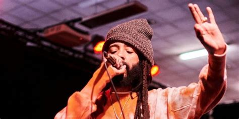
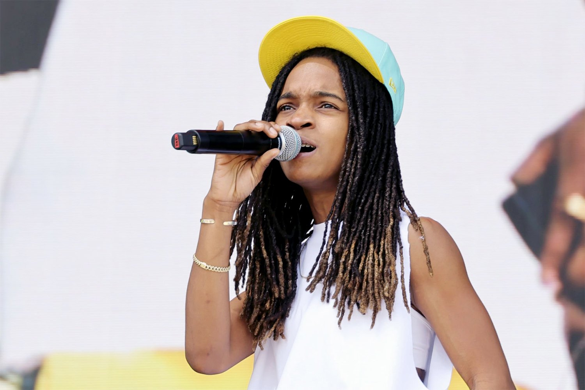
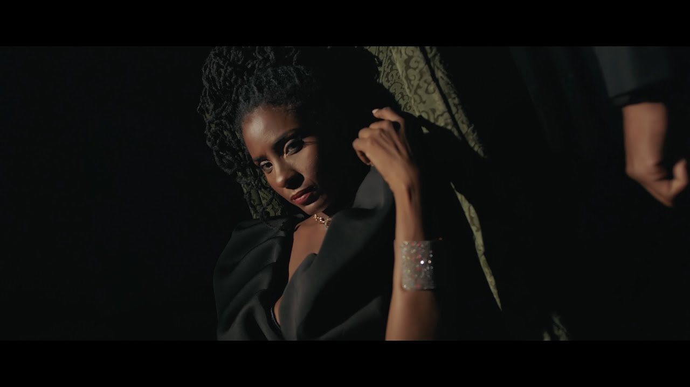

Découvre les légendes et les étoiles montantes du reggae à travers leur musique et leurs histoires.
🎤 Bob Marley
Bob Marley, figure emblématique du reggae, a touché le monde entier avec ses chansons de paix et de liberté.
Titres célèbres : One Love, No Woman No Cry, Redemption Song
🎶 One Love
1- Regarder "One Love" sur YouTube
One Love
"One Love" est un véritable hymne universel, un appel vibrant à l’amour, à la paix, à la tolérance et à la solidarité entre tous les êtres humains. Derrière sa mélodie entraînante se cache un message profondément spirituel et humaniste. Bob Marley y exprime sa vision d’un monde uni, sans haine ni division, porté par la force de l’amour collectif.
Sortie dans les années 1970, cette chanson est devenue un symbole fort du mouvement reggae et de l’engagement de Marley pour la justice sociale. Le refrain "One love, one heart, let’s get together and feel all right" résonne encore aujourd’hui comme une prière chantée par des millions de voix, partout sur la planète.
Plus qu’un simple tube, "One Love" résume l’essence même du reggae : la foi en un monde meilleur, bâti sur le respect, la paix et l’unité. 💛💚❤️
🎶 "No Woman, No Cry" : un hymne universel
2- Écouter "No Woman, No Cry" sur YouTubeSortie en 1974, "No Woman, No Cry" est l’une des chansons les plus célèbres de Bob Marley et un véritable pilier de la musique reggae. Derrière son refrain apaisant se cache un message profond : celui de l’espoir, de la résilience face aux difficultés, et du réconfort. Bob Marley y évoque les souvenirs de son quartier de Trenchtown, en Jamaïque, et rappelle que même dans la pauvreté, la dignité et la fraternité demeurent. Le titre ne signifie pas "femme, ne pleure pas", mais plutôt "Ne pleure pas, femme" – une main tendue, une consolation douce dans un monde parfois rude. C’est une chanson qui touche le cœur, peu importe la langue ou le pays. 💛
🕊️ "Redemption Song" : le chant de la liberté
Parue en 1980, "Redemption Song" est l’une des chansons les plus personnelles et émouvantes de Bob Marley. Contrairement à ses morceaux plus rythmés, cette chanson acoustique est dépouillée, sans percussions ni basse – juste une guitare, une voix, et une vérité bouleversante.
Marley y livre un message fort sur l’émancipation mentale et la liberté des peuples. Inspirée par les discours de Marcus Garvey, figure du panafricanisme, la chanson contient cette phrase culte : “Emancipate yourselves from mental slavery; none but ourselves can free our minds.” – un appel à libérer les consciences et à refuser toute forme d’oppression.
"Redemption Song" résonne comme un testament spirituel de Marley, écrit peu avant sa mort. Elle continue d’inspirer des générations entières à se lever, à espérer, et à croire en un avenir libre et digne.
🎤 Peter Tosh
Peter Tosh était un musicien engagé, co-fondateur des Wailers, connu pour ses prises de position fortes.
Titre célèbre : Equal Rights
✊ "Equal Rights" : la voix de la justice
"Equal Rights", sortie en 1977, est l’un des morceaux les plus puissants de Peter Tosh, ancien membre des Wailers aux côtés de Bob Marley. Dès les premières notes, la chanson revendique haut et fort une idée simple mais révolutionnaire : « I don't want no peace. I need equal rights and justice. »
Pour Tosh, il ne peut y avoir de paix véritable sans égalité et justice. La chanson dénonce les discriminations raciales, l'oppression coloniale, et les inégalités sociales dans le monde entier. C’est un cri de colère, mais aussi un appel à la conscience collective.
Avec "Equal Rights", Peter Tosh affirme le rôle du reggae comme musique de combat, engagée, et profondément connectée aux luttes des peuples opprimés. Ce morceau reste, encore aujourd’hui, un symbole de résistance et de dignité ✊🏿.
🎤 Jimmy Cliff
Jimmy Cliff a contribué à l’essor du reggae avec ses chansons chargées d’émotion et d’espoir.
Titres célèbres : Many Rivers to Cross
🌊 "Many Rivers to Cross" : le chemin de la vie
Sortie en 1969, "Many Rivers to Cross" est l’une des chansons les plus poignantes de Jimmy Cliff. Avec sa voix puissante et émotive, il y évoque les obstacles, les doutes et les moments de solitude qui jalonnent le parcours de chacun.
Le refrain “Many rivers to cross, but I can't seem to find my way over” est devenu un symbole universel de la lutte intérieure et de la persévérance. Cette ballade lente et profonde est portée par une instrumentation sobre, où la sincérité des paroles résonne avec force.
La chanson est notamment connue pour son apparition dans le film culte "The Harder They Come" (1972), dans lequel Jimmy Cliff incarne le rôle principal. Ce film a joué un rôle essentiel dans la diffusion du reggae à l’international, et a renforcé le statut de Jimmy Cliff comme ambassadeur du genre.
Héritage : "Many Rivers to Cross" continue de toucher les auditeurs par son message intemporel d’espoir et de résilience face à l’adversité. Elle est régulièrement reprise par des artistes du monde entier, preuve de sa portée émotionnelle et de son universalité.
🇿🇦 Lucky Dube : la voix du reggae africain
Lucky Dube était un chanteur sud-africain de reggae, né en 1964 à Ermelo. Il débute sa carrière musicale dans le mbaqanga, une forme de pop traditionnelle zouloue. Mais dans les années 1980, inspiré par Bob Marley et Peter Tosh, il se tourne résolument vers le reggae.
Très vite, sa musique devient une arme pacifique contre l’apartheid, la pauvreté et les injustices sociales. Lucky Dube chante pour l’unité, la paix, et les droits humains. Sa voix grave et son charisme en font un porte-parole respecté des opprimés, pas seulement en Afrique du Sud, mais dans toute l’Afrique et au-delà.
À son apogée, il a vendu plus de disques en Afrique du Sud que Michael Jackson aux États-Unis – un record impressionnant qui illustre son immense popularité. Il a reçu de nombreux prix internationaux, dont :
- 🎖️ World Music Award du Meilleur Artiste Africain (1996)
- 🏆 Artiste International de l’Année aux Ghana Music Awards
Avec plus de 20 albums à son actif, ses titres phares sont devenus des classiques du reggae africain, parmi lesquels :
Tragiquement assassiné en 2007 lors d'une tentative de vol de voiture, Lucky Dube a laissé derrière lui un héritage musical et militant puissant. Aujourd’hui encore, il inspire une nouvelle génération d’artistes et de militants africains.
🌟 Chronixx
Chronixx représente la nouvelle génération du reggae roots.
Titres : Here Comes Trouble, Skankin' Sweet
🔥 Chronixx : la voix du reggae moderne
Né Jamar Rolando McNaughton en 1992 en Jamaïque, Chronixx est l’un des artistes les plus influents du mouvement Reggae Revival. Dès ses débuts, il a été salué pour son engagement positif, sa fidélité au roots reggae, et son talent de chanteur et compositeur.
Il représente une nouvelle génération d’artistes qui marchent dans les pas de Bob Marley ou Peter Tosh, tout en apportant un regard neuf sur les réalités du monde actuel. Ses chansons parlent de paix, de justice sociale, d'amour, et d'espoir.
🎵 "Here Comes Trouble"
Ce titre sorti en 2014 a révélé Chronixx à l’international. Avec un riddim puissant et un message fort, il annonce l’arrivée d’une jeunesse consciente et engagée. C’est un appel à l’unité et à la résistance face à l’oppression.
"Here comes trouble, here comes the danger / Rasta youth dem a chant warrior song..."
🌟 Protoje
Protoje fusionne reggae, dub et conscience sociale.
Titres : Who Knows (feat. Chronixx), Blood Money
🌟 Koffee
Koffee est une des révélations reggae/dancehall les plus puissantes de ces dernières années.
Titres : Toast, Rapture, West Indies
🌟 Jah9
Jah9 apporte un style spirituel et poétique au reggae contemporain.
Titres : Ma'at, Steamers A Bubble
🎧 Reggae d’hier et d’aujourd’hui
Le reggae a beaucoup évolué depuis ses débuts dans les années 1960. Si le style original, porté par des artistes comme Bob Marley ou Peter Tosh, reposait sur des rythmes roots, des messages spirituels et une instrumentation acoustique, les artistes d'aujourd'hui mélangent le reggae avec d'autres influences modernes comme le hip-hop, le rap, le dancehall ou même la trap.
Cette nouvelle vague, qu’on appelle parfois reggae revival, garde l’esprit du reggae – la défense des opprimés, l’amour, la conscience sociale – mais le modernise avec des sons actuels et des rythmes plus rapides. C’est pourquoi certains morceaux de Koffee, Protoje ou Kabaka Pyramid peuvent sembler très proches du rap ou du RnB, tout en restant profondément engagés.
Le reggae continue donc de vivre, se transformer et inspirer, tout en s’ouvrant à une nouvelle génération d’artistes et d’auditeurs à travers le monde.
🎶 L’âme du reggae : entre tradition et modernité
Le reggae, à l’origine, c’est bien plus qu’un style musical. C’est une musique d’âme et de lutte. Quand tu écoutes Bob Marley, Peter Tosh ou Lucky Dube, chaque parole a du poids. Ce n’est pas juste pour danser : c’est un cri, une prière, une déclaration politique. Ces artistes parlaient pour leur peuple, avec sincérité, engagement et douleur parfois.
Aujourd’hui, certains artistes portent encore cet esprit, mais souvent, il se dissout dans la mode, le marketing ou des sons trop lissés.
Par exemple, Koffee ou Protoje font de la bonne musique, bien produite, mais parfois très proche du rap, avec un message plus léger.
À l’inverse, des artistes comme Tiken Jah Fakoly parvient à garder l’âme du reggae tout en restant actuels. Il chante pour la justice, la liberté, et il n’a pas peur de dire les choses comme elles sont.
🎧 Tiken Jah Fakoly – 4 titres qui parlent vrai :
- Plus rien ne m’étonne — dénonciation sociale puissante Regarder sur YouTube
- Le pays va mal — cri contre la corruption et l’injustice Regarder sur YouTube
- L’Afrique doit du fric — critique du néocolonialisme Regarder sur YouTube (live)
- Discrimination — appelle à l’unité et à la dignité Regarder sur YouTube
🌍 Ce que je pense vraiment
- 👉 Le reggae ne meurt pas, mais il se transforme.
- 👉 Certains artistes suivent la mode, d’autres suivent la vérité.
Et toi, que ressens-tu quand tu écoutes du vrai reggae ? Celui qui te fait vibrer, réfléchir, et parfois même pleurer ?